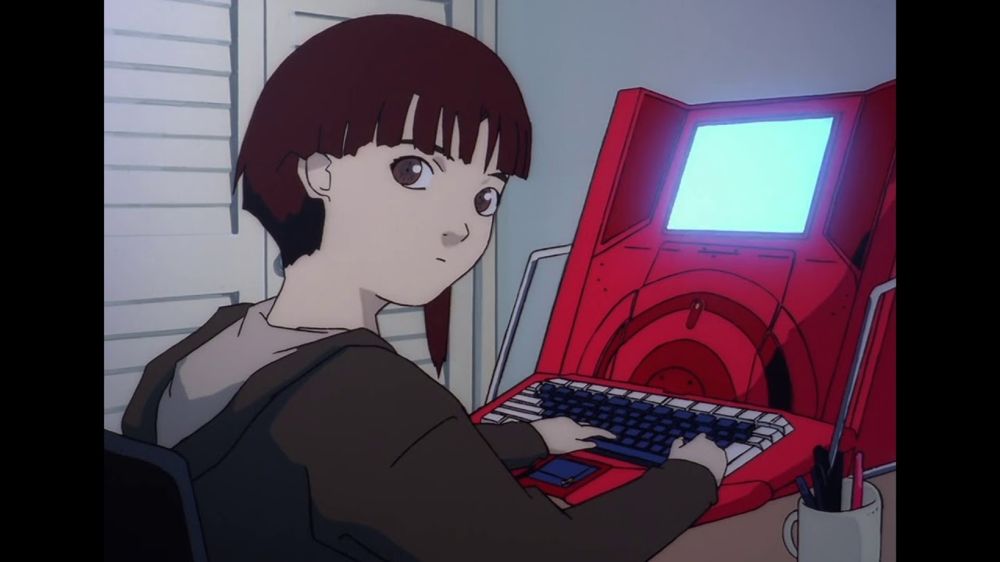

Pour tous ceux qui sont seuls chez eux, ceux qui sont timides, ceux qui n’ont pas le temps, ceux qui n’aiment pas parler, ceux qui n’ont rien à dire, ceux qui se sentent incompris, il existe un moyen de communication terriblement intéressant, c’est l’internet.

Grâce à ce nouveau média qui ne cessera pas de nous étonner, on peut rapidement engager de superbes conversations avec un américain, un français ou son voisin de palier. En plus c’est pas cher, on peut dire (presque) ce que l’on veut sans être gêné puisqu’il n’y a personne en face. On peut même choisir de ne pas répondre, on peut aussi faire d’agréables rencontre et plus si affinité. Bref, le degré de liberté est très élevé, même si certains reprochent une perte des valeurs authentiques du dialogue et tralala et tralala. Il faut évoluer avec le progrès technique, bordel!
Evidemment le novice se sent un peu paumé en arrivant et se demande bien comment faire pour trouver du monde qui partage ses passions comme la manganim’ (inventé par moi pour parler de tout ce qui concerne les mangas et les animes) par exemple. Bon, procédons par étapes. La solution la plus simple au départ est de choper les e-mail d’amis déjà connectés mais injoignables. Ces surfeurs chevronnés vous servirons alors de guide dans la plus grande toile d’araignée du monde. Par contre si vous n’avez pas d’amis (connectés) ça devient plus difficile et c’est là que mon aide devient précieuse. Si vous avez un e-mail c’est très bien, passez au paragraphe suivant. Sinon, suivez mes instructions: tapez l’adresse de caramail dans la petite boite prévue à cet effet: http://www.caramail.com. Ensuite laissez-vous guidez par les explications et vous devriez obtenir votre boite aux lettre en 2-3 minutes. J’ai choisi Caramail parce que c’est un site français, donc accessible, et parce que c’est là que je suis inscrit, mais il y en a d’autres comme yahoo.com, hotmail.com, mailcity.com… En tout cas sur caramail vous avez accès à un certain nombre de forums, dont une petite partie est réservée aux dessins animés. Pour y accéder regardez dans la fenêtre de gauche et trouvez la ligne “Forums caramail”. Cliquez dessus et sélectionnez ensuite “radio et télévision” puis “dessins animés”. Il ne reste plus qu’à cliquer sur les forums qui vous tentent et vous serez inscrits. Ensuite il faut revenir sur la fenêtre de gauche et cliquer deux fois sur le petit carré de “forums caramail” et vous verrez apparaître en-dessous les forums que vous avez demandé. Cliquez dessus et voilà. Vous pouvez consulter les messages anciens envoyés ou écrire au forum. Le principe est le même que lorsque vous écrivez à quelqu’un sauf que votre lettre est ici publique. Essayez de faire en sorte qu’elle intéresse un maximum de monde.
Enfin, il y a également moyen de communiquer en direct, via caramail, dans des salons publiques, mais aussi ailleurs dans des salons plus vastes ou plus restreints, voir une conversation privée. Pour cela il vous faut encore vous inscrire, pour avoir soit un ICQ, soit un IRC. Ce sont de petits programmes qui s’installent sur votre disque dur et qui permettent ainsi de communiquer en direct avec un groupe de personne ou une personne seule. La station Fun Radio utilise notamment ce procédé pour ses émissions et débats. Je suis moi même un novice en la matière et relativement limité dans mes accès au Net, donc je ne dispose pas d’une expérience encore très étendue en la matière, mais je ne manquerais pas de vous communiquer des forums intéresants si j’en trouve.